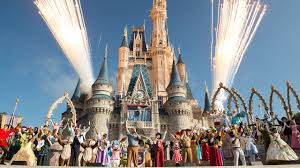
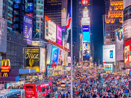
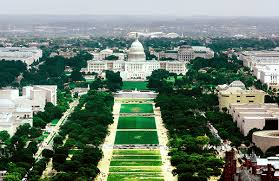
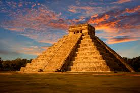

Niagara Falls,U.S and Canada border

The Niagara Falls is an amazing natural wonder located on the border of the United States and Canada. The Falls are the must see attraction in North America. The geological wonder consists of three waterfalls. The Horseshoe Falls border New York State and Ontario, Canada. The American Falls and Bridal Veil Falls are in New York State. The Falls attract an average of 12 million visitors from all over the world each year, and there is much to do and see besides the amazing water falls. There are tours, parks, restaurant, shopping, interactive exhibits, casinos and luxury hotels.
Walt Disney World Parks,U.S
Walt Disney World is the most visited resort in the United States. Walt Disney and his brother Roy opened a theme park Disneyland in Anaheim, California in 1955 and wanted to open a supplemental park. Walt Disney World’s Magic Kingdom was created in Orlando, Florida and opened in October 1971. Epcot Center followed in 1982, Hollywood Studios opened in 1989, and Animal Kingdom followed in 1998. The resort is often used as a corporate meeting destination, and 52 million people visit the parks each year. There are many resorts and different types of Amusement Parks. Walt Disney World is the most popular family trip destination.
Times Square,New York
Time Square, located in Midtown Manhattan at Broadway and Seventh Avenue, is the United States’ most famous intersection. It’s home to commercial business, entertainment venues, hotels and restaurants. It’s also the bub of the Times Square has been called “The Crossroads of the World”, “The Center of the Universe” and “The heart of The Great White Way”. Over 50 million people, mostly tourists, cross the intersection each year. Originally called Longacre Square, it was renamed Times Square in 1904 when The New York Times moved its headquarters there.
National Mall,Washington DC
The capital of the United States, Washington DC, has multiple attractions, but visitors must be sure to check out the National Mall. The national park begins at Capitol Hill and stretches toward the Potomac River and is home to several memorials including the Washington Memorial, Jefferson Memorial, Lincoln Memorial and memorials honoring the wars that the United States have fought. The National Mall is a gathering place for people witnessing the United States Presidential Inaugurations. The National Mall is also home to the Smithsonian Institute.
CHhichen Itza,Mexico
The Mayan ruins Chichen Itza is located on the Yucatan peninsula of Mexico. Chichen Itza means “at the mouth of the well of the Itza people”. It was the Mayan’s largest and most densely populated city between 750 AD and 900 AD and most likely a spiritual center. The ruins of the city are managed by the federal government. The architectural ruins of Chichen Itza are some of the most visited in the world with more than 2 million tourists a year.